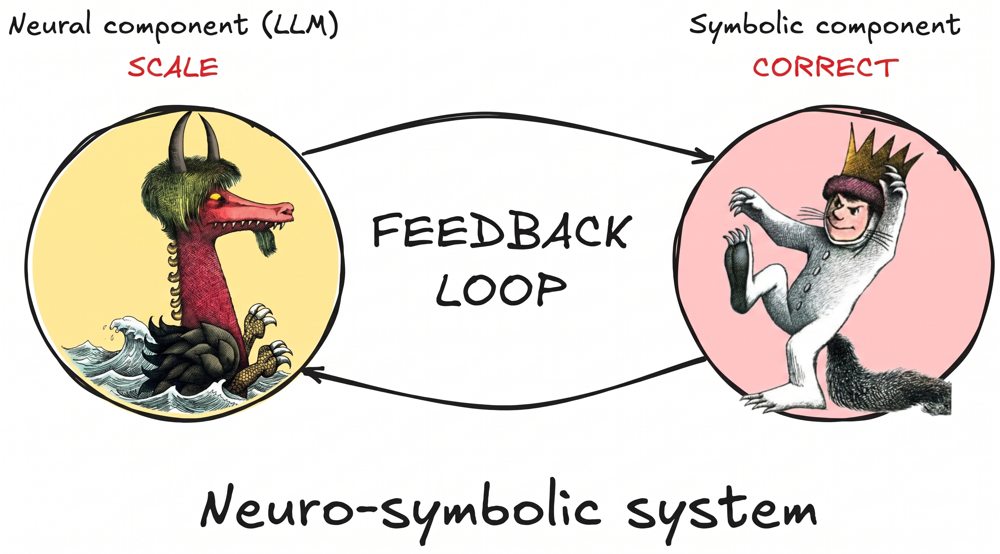

LOGOS
Logic and Games for
Correct and Scalable Synthesis
Nathanaël Fijalkow — CNRS, LaBRI, University of Bordeaux

Generate certified code for physics-based simulations.

Write a controller for a robot ensuring safety constraints.

Detect security vulnerabilities in code.


We need both correct and scalable :
neuro-symbolic methods!
neuro-symbolic methods!

Reactive synthesis

Example specification:
"If the passenger changes their mind, the taxi still delivers them".

Cambridge University Press
Reactive synthesis is often cast as a game between the controller and the environment .

Since 1991: complexity of solving parity games (= reactive synthesis with complex specifications) . Quasipolynomial barrier for discrete algorithms (SODA 2019).
Construct algorithms for POMDPs (= reactive synthesis under partial observation) .
Logic synthesis

The disruptive approach:
GPU accelerated logic synthesis
- Logic synthesis is a
combinatorial search problem : we need to explore the very large space of logical formulas. - Combinatorial search problems are "
embarassingly parallel ": search branches are independent of each other.

We obtained significant improvements using GPU acceleration in simple logic synthesis domains (CAV 2024, TACAS 2026, NeurIPS 2026).
LOGOS targetsthree new directions :
LOGOS targets
Recursive formulas, with applications to hardware optimizationQuantitative formulas, with applications to cyber-physical systemsMore expressive formalisms, with applications to cybersecurity
Scale logic synthesis to industrial-size problems.

Budget — beyond personnel
- Presenting results at conferences: €52K
- Invited expert missions & visits: €25K
- Dagstuhl-style brainstorming retreat with experts: €25K
One dedicated workshop (venue & catering) to gather the community around LOGOS' results.
Two GPU compute workstations for the team.
Timeline & hires
- SODA 2019: quasi-polynomial lower bound for parity games
- AAAI 2025 Outstanding Paper Award: information-theoretic POMDPs
- Cambridge University Press 2026: coordinated and coauthored the textbook Games on Graphs
- CAV 2024: LTL learning on GPUs
- NeurIPS 2026: Mixed-boolean Arithmetic on GPUs
- AAAI 2022, AAAI 2025: DeepSynth, a founding neuro-symbolic architecture
- Google.org 2024: Technical Lead LLM
- JOSS 2025: BordAX, a JAX-based reinforcement learning framework
- NeurIPS 2026: Analysing world models in Transformers
Abstraction and Reasoning Challenge (ARC)

- Frontier LLMs solve them using massive compute.
- Endowed with $2 million prize.
LOGOS' neuro-symbolic engine (Pillar 3) targets the top position on the ARC-AGI leaderboard.